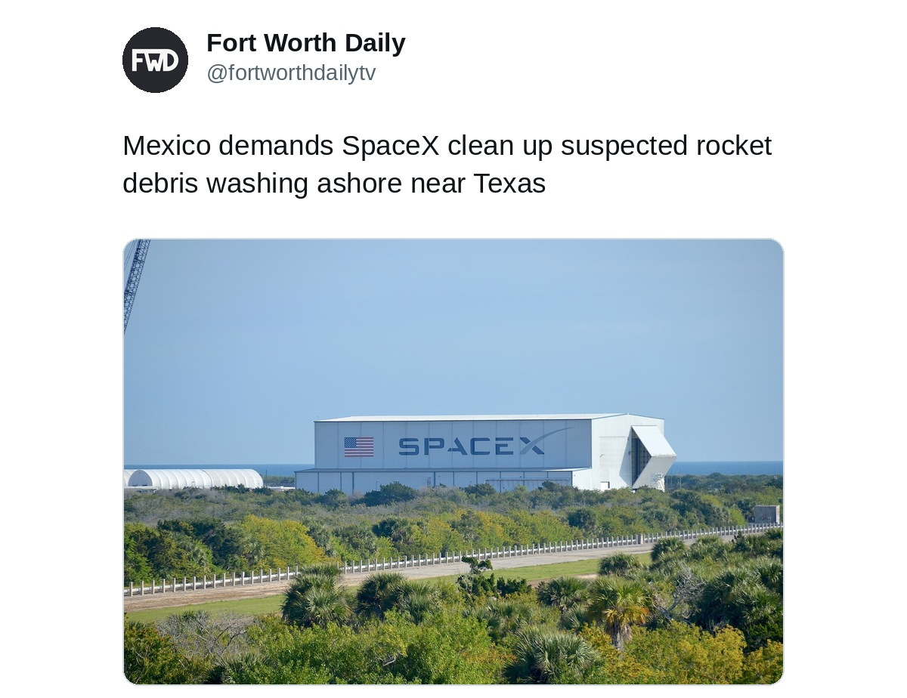

FWD
Fort Worth Daily
Just now · 🌎 · breaking · template writer
Just now · 🌎 · breaking · template writer
Suspected debris from a SpaceX rocket explosion has washed up in Mexico, prompting cleanup efforts and new questions about environmental risks near Texas.

FWD
story + scoring
{
"source": "KVUE Austin",
"kind": "rss",
"score": 0.8003,
"relevance": 2,
"url": "https://www.kvue.com/article/news/state/texas-news/mexico-demands-spacex-clean-suspected-rocket-debris-washing-ashore-texas/287-d6374a3f-d02f-4de0-8d19-6c39015a232e",
"image_license": "wikimedia-cc",
"image_credit": "Photo: Olga Ernst via Wikimedia Commons (CC BY-SA 4.0)"
}